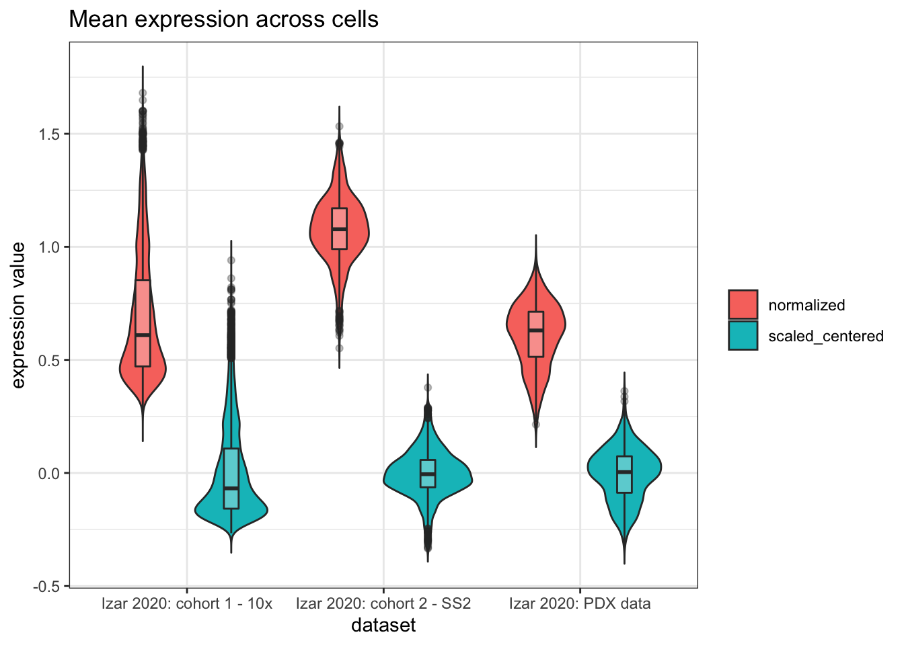
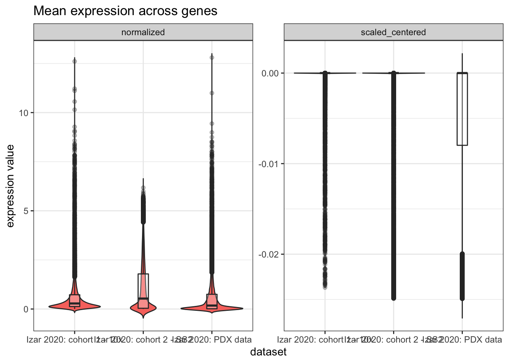
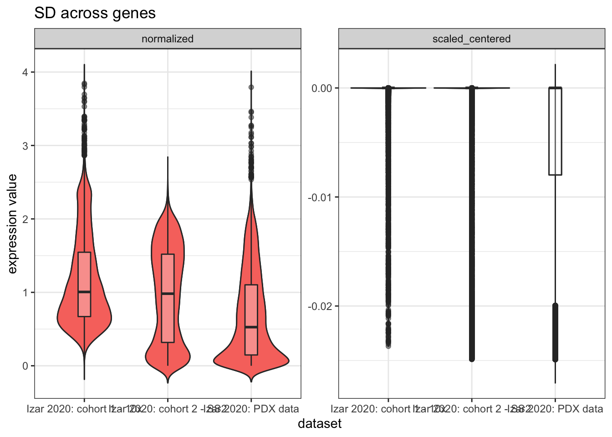
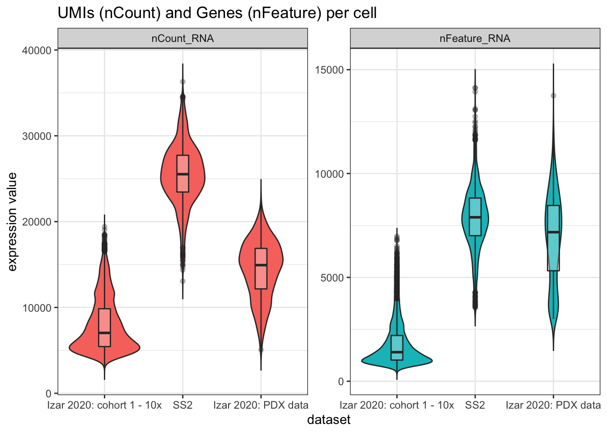

Last updated: 2020-07-14
Checks: 6 1
Knit directory: jesslyn_ovca/analysis/
This reproducible R Markdown analysis was created with workflowr (version 1.6.2). The Checks tab describes the reproducibility checks that were applied when the results were created. The Past versions tab lists the development history.
The R Markdown file has unstaged changes. To know which version of the R Markdown file created these results, you’ll want to first commit it to the Git repo. If you’re still working on the analysis, you can ignore this warning. When you’re finished, you can run wflow_publish to commit the R Markdown file and build the HTML.
Great job! The global environment was empty. Objects defined in the global environment can affect the analysis in your R Markdown file in unknown ways. For reproduciblity it’s best to always run the code in an empty environment.
The command set.seed(20200713) was run prior to running the code in the R Markdown file. Setting a seed ensures that any results that rely on randomness, e.g. subsampling or permutations, are reproducible.
Great job! Recording the operating system, R version, and package versions is critical for reproducibility.
Nice! There were no cached chunks for this analysis, so you can be confident that you successfully produced the results during this run.
Great job! Using relative paths to the files within your workflowr project makes it easier to run your code on other machines.
Great! You are using Git for version control. Tracking code development and connecting the code version to the results is critical for reproducibility.
The results in this page were generated with repository version f4cf1cb. See the Past versions tab to see a history of the changes made to the R Markdown and HTML files.
Note that you need to be careful to ensure that all relevant files for the analysis have been committed to Git prior to generating the results (you can use wflow_publish or wflow_git_commit). workflowr only checks the R Markdown file, but you know if there are other scripts or data files that it depends on. Below is the status of the Git repository when the results were generated:
Ignored files:
Ignored: .DS_Store
Ignored: .Rhistory
Ignored: .Rproj.user/
Ignored: analysis/.DS_Store
Ignored: old/.DS_Store
Ignored: renv/library/
Ignored: renv/python/
Ignored: renv/staging/
Ignored: vignettes/
Untracked files:
Untracked: data/
Unstaged changes:
Modified: .gitignore
Modified: analysis/data_summary.Rmd
Modified: packages.R
Modified: renv.lock
Note that any generated files, e.g. HTML, png, CSS, etc., are not included in this status report because it is ok for generated content to have uncommitted changes.
These are the previous versions of the repository in which changes were made to the R Markdown (analysis/data_summary.Rmd) and HTML (docs/data_summary.html) files. If you’ve configured a remote Git repository (see ?wflow_git_remote), click on the hyperlinks in the table below to view the files as they were in that past version.
| File | Version | Author | Date | Message |
|---|---|---|---|---|
| Rmd | f4cf1cb | Mike Cuoco | 2020-07-14 | fix .gitignore |
| Rmd | 94291f2 | Mike Cuoco | 2020-07-14 | add headers and workflowr yaml matter |
| Rmd | 99cce10 | Mike Cuoco | 2020-07-14 | new file |
ovca_10x = here::here("data","Izar_2020","Izar_2020_10x.RDS") %>% readRDS()
glimpse(ovca_10x@meta.data)Rows: 9,333
Columns: 13
$ orig.ident <fct> Izar 2020: cohort 1 - 10x, Izar 2020: cohort 1 - 10x…
$ nCount_RNA <dbl> 4677.995, 5899.826, 6746.130, 10510.568, 9628.698, 4…
$ nFeature_RNA <int> 839, 1196, 1343, 2358, 2022, 875, 1117, 747, 775, 21…
$ patient <dbl> 5, 5, 5, 5, 5, 5, 5, 5, 5, 5, 5, 5, 5, 5, 5, 5, 5, 5…
$ time <dbl> 1, 1, 1, 1, 1, 1, 1, 1, 1, 1, 1, 1, 1, 1, 1, 1, 1, 1…
$ sample.ID <fct> 5.1, 5.1, 5.1, 5.1, 5.1, 5.1, 5.1, 5.1, 5.1, 5.1, 5.…
$ clst <dbl> 1, 1, 1, 2, 2, 1, 1, 1, 1, 2, 2, 1, 3, 1, 2, 2, 2, 4…
$ TSNE.x <dbl> 45.336310, 35.076090, 27.412720, -12.224810, -1.3493…
$ TSNE.y <dbl> 46.9334800, -20.1010500, -1.8764310, -86.4608200, -6…
$ percent.mt <dbl> 1.82006622, 0.94261326, 0.63322995, 0.65250061, 0.89…
$ n.exp.hkgenes <int> 49, 56, 44, 67, 64, 56, 55, 51, 48, 64, 63, 46, 68, …
$ cell.type <chr> "Malignant", "Malignant", "Malignant", "Malignant", …
$ treatment.status <chr> "After 1 cycle of chemotherapy", "After 1 cycle of c…ovca_SS2 = here::here("data","Izar_2020","Izar_2020_SS2.RDS") %>% readRDS()
glimpse(ovca_SS2@meta.data)Rows: 1,297
Columns: 12
$ orig.ident <fct> SS2, SS2, SS2, SS2, SS2, SS2, SS2, SS2, SS2, SS2, SS…
$ nCount_RNA <dbl> 22621.85, 24485.64, 24483.62, 30512.32, 28782.77, 24…
$ nFeature_RNA <int> 6047, 6892, 7090, 9473, 8803, 6414, 5093, 7327, 6228…
$ tSNE1 <dbl> 15.14379, 13.51832, 17.96613, 17.31081, 18.68905, 16…
$ tSNE2 <dbl> 25.80910, 27.50209, 28.69189, 38.13392, 38.33419, 29…
$ Patient <dbl> 7, 7, 7, 7, 7, 7, 7, 7, 7, 7, 7, 7, 7, 7, 7, 7, 7, 7…
$ Time <dbl> 1, 1, 1, 1, 1, 1, 1, 1, 1, 1, 1, 1, 1, 1, 1, 1, 1, 1…
$ clst <dbl> 5, 5, 5, 5, 5, 5, 5, 5, 5, 5, 5, 5, 5, 5, 5, 5, 5, 5…
$ percent.mt <dbl> 0, 0, 0, 0, 0, 0, 0, 0, 0, 0, 0, 0, 0, 0, 0, 0, 0, 0…
$ n.exp.hkgenes <int> 83, 81, 84, 89, 88, 85, 84, 85, 81, 82, 88, 85, 80, …
$ treatment.status <chr> "On-treatment", "On-treatment", "On-treatment", "On-…
$ cell.type <fct> Malignant, Malignant, Malignant, Malignant, Malignan…ovca_PDX = here::here("data","Izar_2020","Izar_2020_PDX.RDS") %>% readRDS()
glimpse(ovca_PDX@meta.data)Rows: 795
Columns: 8
$ orig.ident <fct> Izar 2020: PDX data, Izar 2020: PDX data, Izar 2020:…
$ nCount_RNA <dbl> 11951.870, 18239.655, 16691.926, 14353.022, 9443.317…
$ nFeature_RNA <int> 3628, 10004, 8821, 7698, 3728, 3284, 7296, 10075, 54…
$ mouse_ID <dbl> 500, 494, 494, 500, 494, 500, 500, 500, 496, 500, 50…
$ model_ID <chr> "DF20", "DF20", "DF20", "DF20", "DF20", "DF20", "DF2…
$ treatment.status <chr> "relapse", "vehicle", "vehicle", "relapse", "vehicle…
$ n.exp.hkgenes <int> 72, 91, 88, 83, 76, 73, 83, 86, 80, 84, 81, 82, 84, …
$ percent.mt <dbl> 0, 0, 0, 0, 0, 0, 0, 0, 0, 0, 0, 0, 0, 0, 0, 0, 0, 0…dims = map_dfr(list("10x" = ovca_10x, "SS2" = ovca_SS2, "PDX" = ovca_PDX),
function(i){
x = tibble(.rows = 1)
x$dataset = i@project.name
x$genes = dim(i)[1]
x$cells = dim(i)[2]
x$patients = try_default(length(unique(select(i@meta.data, matches("patient"))[[1]])), NA)
x$mouse_models = try_default(length(unique(i$model_ID)),NA)
return(x)
}
)Error in `[[.Seurat`(x, i, drop = TRUE) :
Cannot find 'model_ID' in this Seurat object
Error in `[[.Seurat`(x, i, drop = TRUE) :
Cannot find 'model_ID' in this Seurat object
Error in .subset2(x, i, exact = exact) : subscript out of boundsgt(dims)| dataset | genes | cells | patients | mouse_models |
|---|---|---|---|---|
| Izar 2020: cohort 1 - 10x | 11548 | 9333 | 6 | NA |
| Izar 2020: cohort 2 - SS2 | 23687 | 1297 | 9 | NA |
| Izar 2020: PDX data | 23686 | 795 | NA | 3 |
source(here::here('code','seurat_tab.R'))
Attaching package: 'reshape2'The following object is masked from 'package:tidyr':
smiths# create summary tables using Mike's function
seurat_tab(ovca_10x, col_var = "patient", row_var = "cell.type", title = "Patient cells")| Patient cells | |||||||
|---|---|---|---|---|---|---|---|
| dataset: Izar 2020: cohort 1 - 10x | |||||||
| patient | total | ||||||
| 1 | 2 | 3 | 4 | 5 | 6 | ||
| B cells | 0 | 14 | 8 | 0 | 0 | 1 | 23 |
| DC | 3 | 63 | 99 | 48 | 36 | 8 | 257 |
| Erythrocytes | 9 | 0 | 14 | 0 | 0 | 0 | 23 |
| Fibroblast | 5 | 427 | 361 | 0 | 36 | 1 | 830 |
| Macrophage | 135 | 4 | 2 | 618 | 1027 | 1166 | 2952 |
| Malignant | 50 | 51 | 92 | 2 | 4893 | 11 | 5099 |
| T cells | 149 | 0 | 0 | 0 | 0 | 0 | 149 |
| total | 351 | 559 | 576 | 668 | 5,992 | 1,187 | 9,333 |
# seurat_tab(ovca_10x, col_var = "patient", row_var = "cell.type", group_var = "treatment.status", title = "Patient cells by treatment status") %>% row_group_order(c("Treatment-naïve","After 1 cycle of chemotherapy","On-treatment"))
seurat_tab(ovca_SS2, col_var = "Patient", row_var = "cell.type", title = "Patient cells")| Patient cells | ||||||||||
|---|---|---|---|---|---|---|---|---|---|---|
| dataset: Izar 2020: cohort 2 - SS2 | ||||||||||
| Patient | total | |||||||||
| 5 | 7 | 8 | 9 | 10 | 11 | 21 | 22 | 23 | ||
| Fibroblast | 0 | 0 | 0 | 0 | 0 | 6 | 55 | 11 | 33 | 105 |
| Macrophage | 0 | 3 | 2 | 0 | 0 | 10 | 9 | 6 | 0 | 30 |
| Malignant | 157 | 252 | 179 | 221 | 299 | 52 | 0 | 2 | 0 | 1162 |
| total | 157 | 255 | 181 | 221 | 299 | 68 | 64 | 19 | 33 | 1,297 |
# seurat_tab(ovca_SS2, col_var = "Patient", row_var = "cell.type", group_var = "treatment.status", title = "Patient cells by treatment status")
seurat_tab(ovca_PDX, col_var = "model_ID", row_var = "treatment.status", title = "Mouse model cells by Treatment Status")| Mouse model cells by Treatment Status | ||||
|---|---|---|---|---|
| dataset: Izar 2020: PDX data | ||||
| model_ID | total | |||
| DF101 | DF20 | DF68 | ||
| MRD | 60 | 171 | 51 | 282 |
| relapse | 55 | 172 | 73 | 300 |
| vehicle | 39 | 151 | 23 | 213 |
| total | 154 | 494 | 147 | 795 |
ovca_10x = ScaleData(ovca_10x, do.scale = T, do.center = T)Centering and scaling data matrixovca_SS2 = ScaleData(ovca_SS2, do.scale = T, do.center = T)Centering and scaling data matrixovca_PDX = ScaleData(ovca_PDX, do.scale = T, do.center = T)Centering and scaling data matrixcells = tibble(); geneMeans = tibble(); geneSDs = tibble(); features = tibble()
for (i in list("10x" = ovca_10x, "SS2" = ovca_SS2, "PDX" = ovca_PDX)){
x = Matrix::colMeans(i[["RNA"]]@data) %>% as_tibble()
names(x) = "normalized"
x$scaled_centered = Matrix::colMeans(i[["RNA"]]@scale.data)
x$dataset = i@project.name
cells = rbind(cells, x)
y = Matrix::rowMeans(i[["RNA"]]@data) %>% as_tibble()
names(y) = "normalized"
y$scaled_centered = Matrix::rowMeans(i[["RNA"]]@scale.data)
y$dataset = i@project.name
geneMeans = rbind(geneMeans, y)
w = apply(i[["RNA"]]@data, 1, sd) %>% as_tibble()
names(w) = "normalized"
w$scaled_centered = Matrix::rowMeans(i[["RNA"]]@scale.data)
w$dataset = i@project.name
geneSDs = rbind(geneSDs, w)
z = select(i@meta.data, c("orig.ident","nCount_RNA","nFeature_RNA"))
features = rbind(features, z)
}
melt(cells) %>%
ggplot(aes(x = dataset, y = value)) +
geom_violin(aes(fill = variable), trim = FALSE, position = position_dodge(0.9) ) +
geom_boxplot(aes(position = variable), width = 0.15, position = position_dodge(0.9), alpha = 0.3) +
labs(title = "Mean expression across cells",
x = "dataset",
y = "expression value",
fill = NULL) +
theme_bw()Using dataset as id variablesWarning: attributes are not identical across measure variables; they will be
droppedWarning: Ignoring unknown aesthetics: position
melt(geneMeans) %>%
ggplot(aes(x = dataset, y = value)) +
geom_violin(aes(fill = variable), trim = FALSE, position = position_dodge(0.9) ) +
geom_boxplot(width = 0.15, position = position_dodge(0.9), alpha = 0.3) +
facet_wrap(. ~ variable, scales = "free") +
labs(title = "Mean expression across genes",
x = "dataset",
y = "expression value",
fill = NULL) +
guides(fill = F) +
theme_bw()Using dataset as id variablesWarning: attributes are not identical across measure variables; they will be
dropped
melt(geneSDs) %>%
ggplot(aes(x = dataset, y = value)) +
geom_violin(aes(fill = variable), trim = FALSE, position = position_dodge(0.9) ) +
geom_boxplot(aes(position = variable), width = 0.15, position = position_dodge(0.9), alpha = 0.3) +
geom_violin(aes(fill = variable), trim = FALSE, position = position_dodge(0.9) ) +
geom_boxplot(width = 0.15, position = position_dodge(0.9), alpha = 0.3) +
facet_wrap(. ~ variable, scales = "free") +
labs(title = "SD across genes",
x = "dataset",
y = "expression value",
fill = NULL) +
guides(fill = F) +
theme_bw()Using dataset as id variablesWarning: attributes are not identical across measure variables; they will be
dropped
Warning: Ignoring unknown aesthetics: position
melt(features) %>%
ggplot(aes(x = orig.ident, y = value)) +
geom_violin(aes(fill = variable), trim = FALSE, position = position_dodge(0.9) ) +
geom_boxplot(width = 0.15, position = position_dodge(0.9), alpha = 0.3) +
facet_wrap(. ~ variable, scales = "free") +
labs(title = "UMIs (nCount) and Genes (nFeature) per cell",
x = "dataset",
y = "expression value",
fill = NULL) +
guides(fill = F) +
theme_bw()Using orig.ident as id variables
sessionInfo()R version 4.0.2 (2020-06-22)
Platform: x86_64-apple-darwin19.5.0 (64-bit)
Running under: macOS Catalina 10.15.5
Matrix products: default
BLAS/LAPACK: /usr/local/Cellar/openblas/0.3.10_1/lib/libopenblasp-r0.3.10.dylib
locale:
[1] en_US.UTF-8/en_US.UTF-8/en_US.UTF-8/C/en_US.UTF-8/en_US.UTF-8
attached base packages:
[1] stats graphics grDevices datasets utils methods base
other attached packages:
[1] reshape2_1.4.4 tidyselect_1.1.0 gt_0.2.1 plyr_1.8.6
[5] Seurat_3.1.5 forcats_0.5.0 stringr_1.4.0 dplyr_1.0.0
[9] purrr_0.3.4 readr_1.3.1 tidyr_1.1.0 tibble_3.0.3
[13] ggplot2_3.3.2 tidyverse_1.3.0
loaded via a namespace (and not attached):
[1] Rtsne_0.15 colorspace_1.4-1 ellipsis_0.3.1
[4] ggridges_0.5.2 rprojroot_1.3-2 fs_1.4.2
[7] rstudioapi_0.11 farver_2.0.3 leiden_0.3.3
[10] listenv_0.8.0 ggrepel_0.8.2 fansi_0.4.1
[13] lubridate_1.7.9 xml2_1.3.2 codetools_0.2-16
[16] splines_4.0.2 knitr_1.29 jsonlite_1.7.0
[19] workflowr_1.6.2 broom_0.7.0 ica_1.0-2
[22] cluster_2.1.0 dbplyr_1.4.4 png_0.1-7
[25] uwot_0.1.8 sctransform_0.2.1 compiler_4.0.2
[28] httr_1.4.1 backports_1.1.8 assertthat_0.2.1
[31] Matrix_1.2-18 lazyeval_0.2.2 cli_2.0.2
[34] later_1.1.0.1 htmltools_0.5.0 tools_4.0.2
[37] rsvd_1.0.3 igraph_1.2.5 gtable_0.3.0
[40] glue_1.4.1 RANN_2.6.1 Rcpp_1.0.5
[43] cellranger_1.1.0 vctrs_0.3.1 ape_5.4
[46] nlme_3.1-148 lmtest_0.9-37 xfun_0.15
[49] globals_0.12.5 rvest_0.3.5 lifecycle_0.2.0
[52] irlba_2.3.3 renv_0.11.0-4 future_1.18.0
[55] MASS_7.3-51.6 zoo_1.8-8 scales_1.1.1
[58] hms_0.5.3 promises_1.1.1 parallel_4.0.2
[61] RColorBrewer_1.1-2 yaml_2.2.1 gridExtra_2.3
[64] reticulate_1.16 pbapply_1.4-2 sass_0.2.0
[67] stringi_1.4.6 checkmate_2.0.0 rlang_0.4.7
[70] pkgconfig_2.0.3 evaluate_0.14 lattice_0.20-41
[73] ROCR_1.0-11 labeling_0.3 patchwork_1.0.1
[76] htmlwidgets_1.5.1 cowplot_1.0.0 here_0.1
[79] RcppAnnoy_0.0.16 magrittr_1.5 R6_2.4.1
[82] generics_0.0.2 DBI_1.1.0 pillar_1.4.6
[85] haven_2.3.1 whisker_0.4 withr_2.2.0
[88] fitdistrplus_1.1-1 survival_3.2-3 tsne_0.1-3
[91] future.apply_1.6.0 modelr_0.1.8 crayon_1.3.4
[94] utf8_1.1.4 KernSmooth_2.23-17 plotly_4.9.2.1
[97] rmarkdown_2.3 grid_4.0.2 readxl_1.3.1
[100] data.table_1.12.8 blob_1.2.1 git2r_0.27.1
[103] reprex_0.3.0 digest_0.6.25 httpuv_1.5.4
[106] munsell_0.5.0 viridisLite_0.3.0